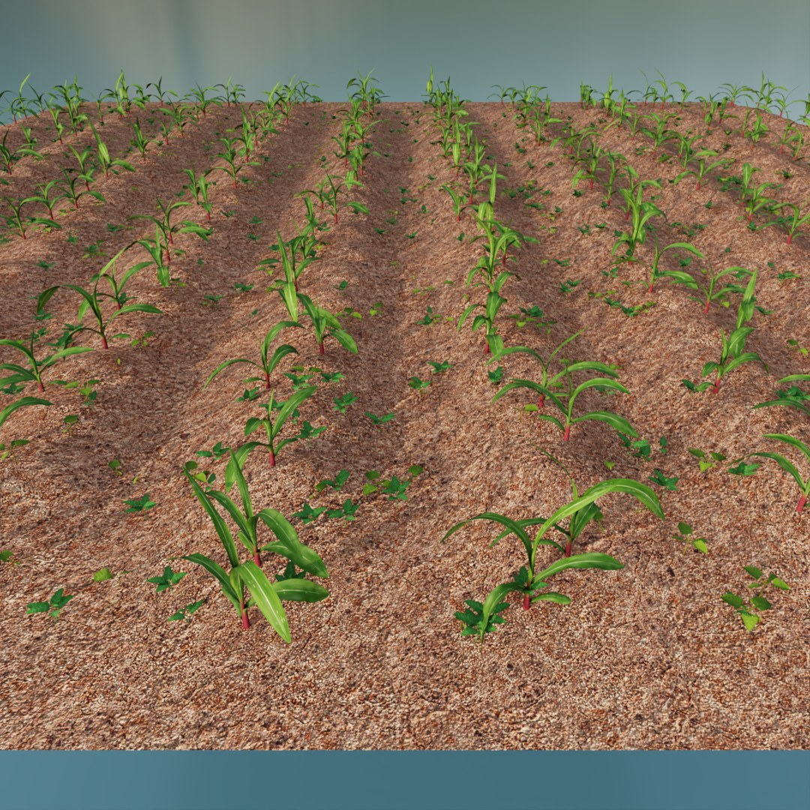
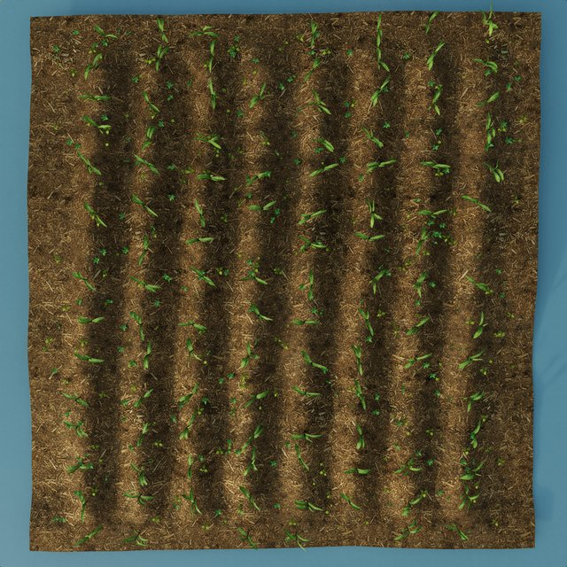
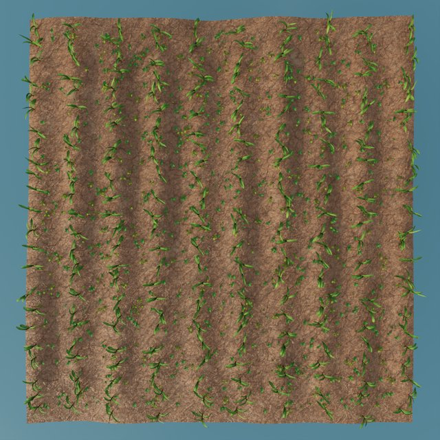
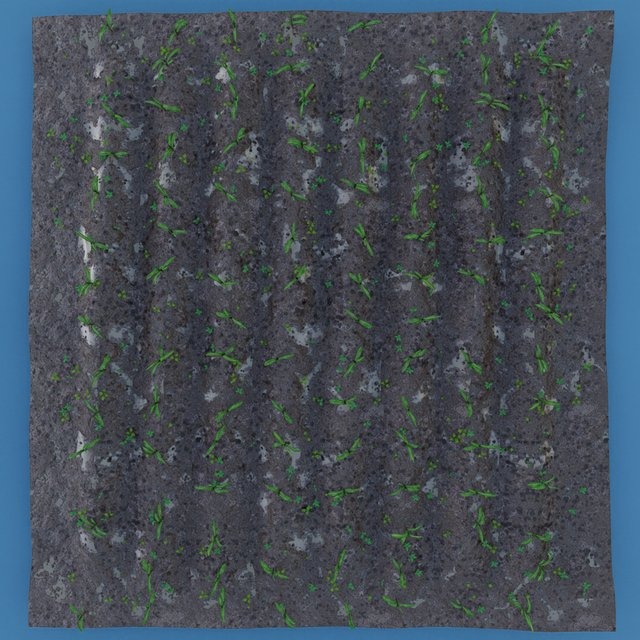
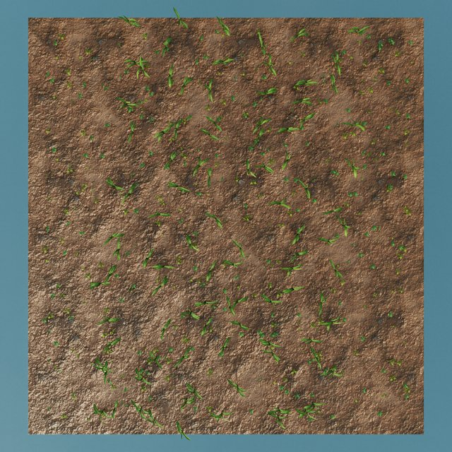
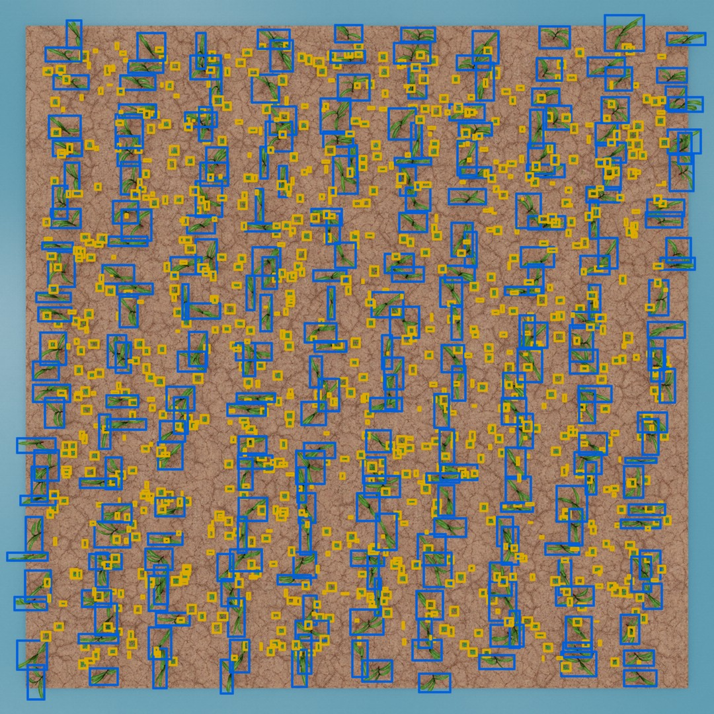
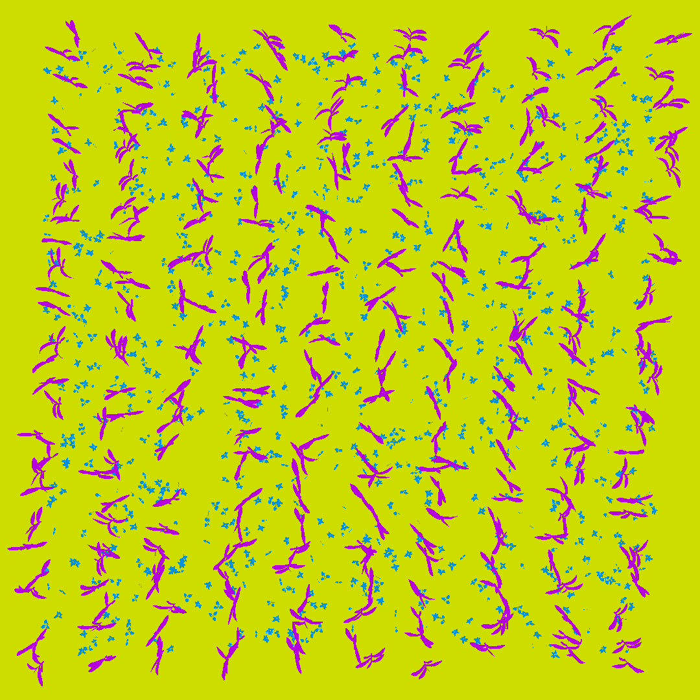
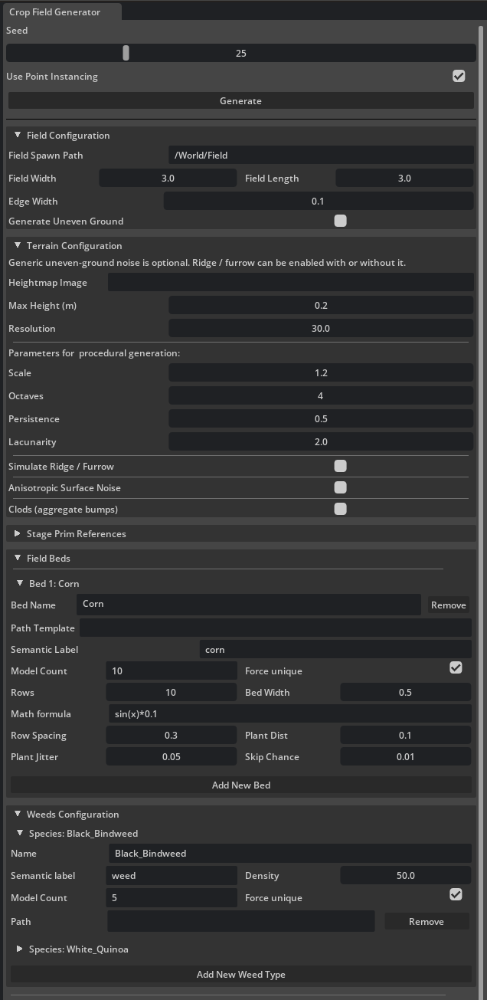

Procedurally generate agricultural fields - crop beds, weeds and terrain - and capture Replicator-ready synthetic datasets, all randomized from a single seed.
Developed at Łukasiewicz - Poznań Institute of Technology

FieldForge lays out crop beds, scatters weeds and deforms the ground into realistic terrain - then hands the scene to Omniverse Replicator to render annotated datasets. Every seed reshuffles plant placement, lighting, ground materials and camera angles, so you can produce large, diverse synthetic datasets in a few clicks.
A complete pipeline from procedural layout to labelled training data.
Multiple crop types with configurable rows, spacing, per-plant jitter and skip chance. Rows can be curved with a math formula.
Scatter several weed species across the field by area density - weeds per square meter - for realistic infestation.
Deform the ground from a heightmap or NumPy noise, with additive ridge/furrow, anisotropic roughness and scattered soil clods.
Each seed randomizes the active light and its rotation plus the ground material and texture offsets to diversify every scene.
Render N frames automatically - incrementing the seed and repositioning the camera - exporting RGB and semantic segmentation.
Fast point-instancing for rapid viewport iteration, or standard USD instancing for accurate Replicator 2D bounding boxes.
Every seed produces a different ground material, terrain profile and plant layout.




Disable point-instancing and the field becomes fully Replicator-ready - every frame exported with crops and weeds as separate classes, ready for training.


Set the seed, dimensions and terrain, then add as many crop beds and weed species as you need. All settings are saved and restored automatically, and bundled sample corn and weed models let you generate a field the moment you enable the extension.

The extension is free and copyleft; the sample assets are a non-commercial preview.
Use, modify and redistribute freely - any distributed derivative must stay open source under the same license. © 2026 Łukasiewicz - PIT.
The bundled crop and weed models are a non-commercial preview of a larger commercial library. Attribution and share-alike required. © 2026 Łukasiewicz - PIT.